木婉清，TVC广告热播ing
木婉清为什么能健康瘦身呢？
木婉清是一款黑木耳深加工食品，利用国家专利木耳多糖提取技术和超微粉碎技术;
将木耳的功效发挥到极致，吸附体内多余脂肪和垃圾毒素排出体外，同时抑制脂肪的吸收;
而且里面还有调理脾胃的食物，这样就可以瘦身，同时养成易瘦体质，是不会反弹的。
（木婉清有全中国唯一一台木耳加工清洗破壁提取烘干超微的生产线，是唯一）
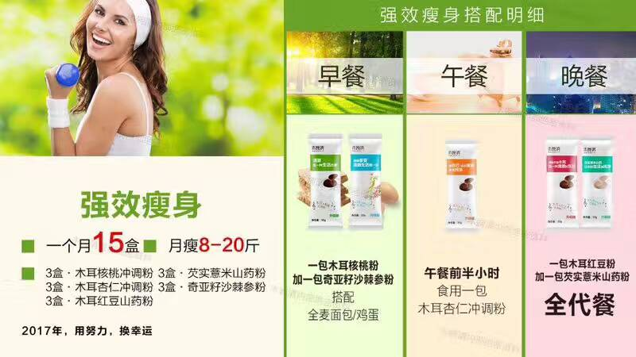
【木婉清是什么呢❓】
木婉清类属于食品。
是一款功效型的食疗产品。
它由30多种食材超微粉碎而成。
可以抑制脂肪合成，可以分解脂肪。
可以阻断淀粉吸收，可以保护心脑血管。
可以提高免疫力，可以调节内分泌。
零添加，无防腐，中国人民保险承保。
比婴儿奶粉的制作标准都高的一款产品。
【木婉清-木耳核桃粉】
以黑木耳为主以及各种豆类辅料＋低聚果糖!
主要功效：利用木耳本身超强的吸附性，核桃的营养丰富，木耳核桃粉作为早餐是极佳的选择！益智补脑，营养一整天！
产品0添加,无防腐剂，无副作用，无依赖性，老人孩子孕妇哺乳期都可以享用！
针对三高人群，木耳核桃粉还有着超好的改善血糖血脂和血压的功效！
每天一杯木耳核桃粉 营养早餐，健康身体。
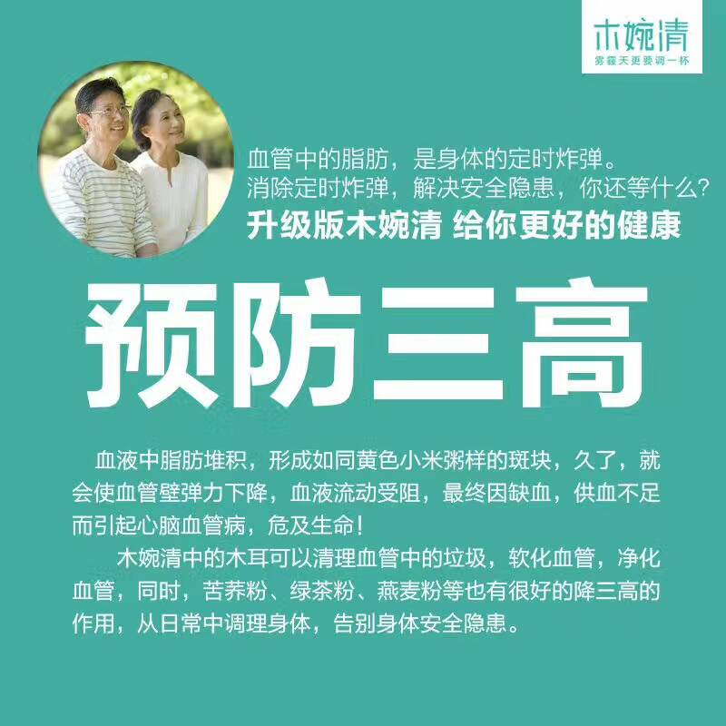
【木婉清--奇亚籽沙棘参粉】
产品主要原料：奇亚籽，沙棘，人参！
主要功效：针对气血不足，代谢慢起到良好的调理代谢作用！
产品0添加,无防腐剂，无副作用，无依赖性，老人孩子孕妇哺乳期都可以享用！
每天早上空腹一杯，搭配瘦身，调理便秘。
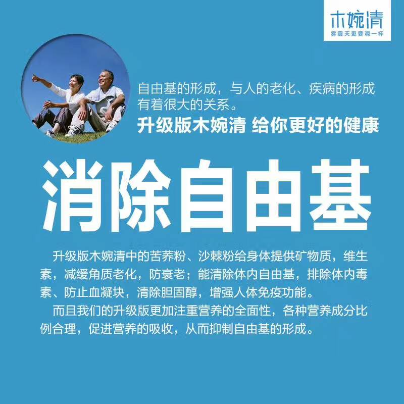
【木婉清调气血、补脑、排毒、调脾胃、暖宫调理月经、调理便秘】
扫一扫二维码 订购
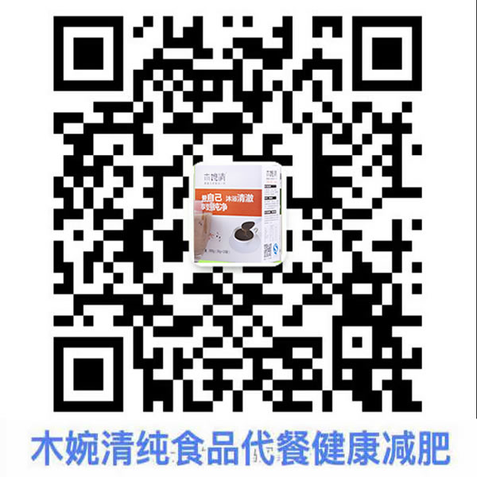
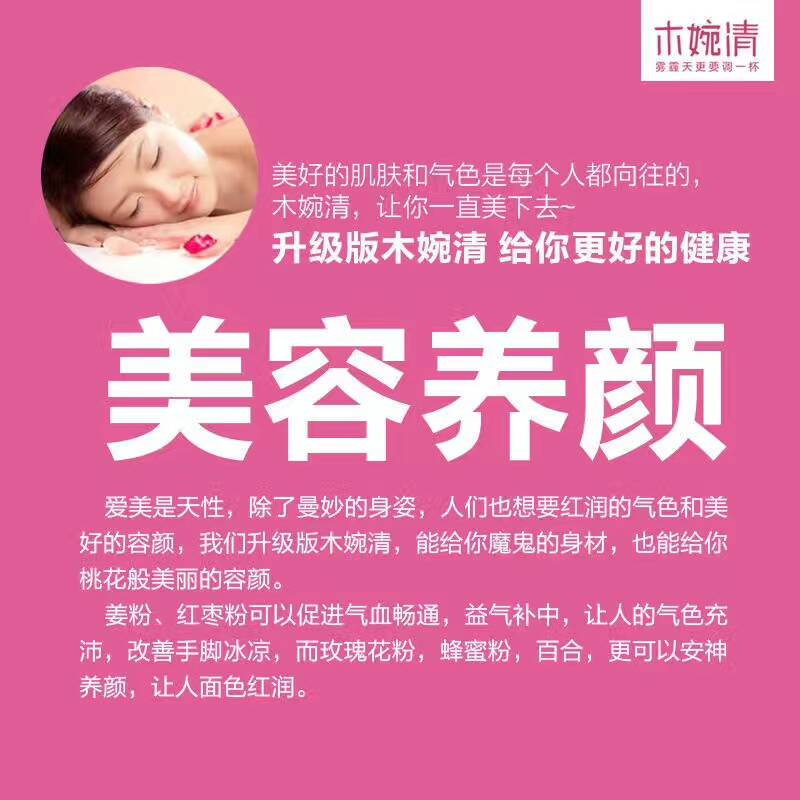
【木婉清-木耳杏仁粉】
以黑木耳为主以及各种豆类辅料＋低聚果糖。
主要功效：利用木耳本身超强的吸附性代谢体内多余垃圾！杏仁抗氧化有益美白！
木耳杏仁粉作为午餐是极佳的选择！
午餐前半小时一杯木耳杏仁粉，吃不胖还可以淡化色斑！
产品0添加,无防腐剂，无副作用，无依赖性，老人孩子孕妇哺乳期都可以享用！
每天午餐前来一杯，又瘦又美白
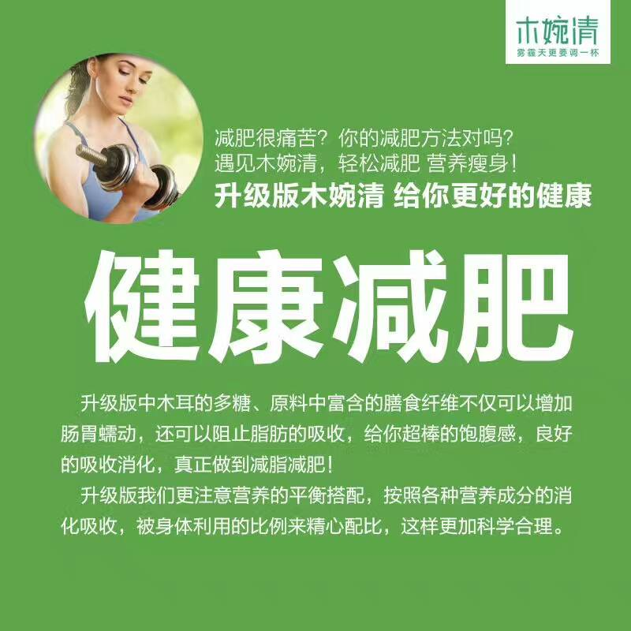
【木婉清-木耳红豆粉加强版】
以黑木耳为主以及各种豆类辅料＋低聚果糖。
主要功效：利用木耳本身超强的吸附性代谢体内多余垃圾！红豆利尿祛水肿！粗纤维含量比较多，饱腹感极强，代餐瘦身营养均衡！吃着瘦的晚餐！
每天晚餐来一杯健康瘦，晚上有应酬可以餐前来一杯哦，加速身体循环棒棒哒。
产品0添加,无防腐剂，无副作用，无依赖性，加强版中添加无花果和燕麦成分，助消化、净肠道，排便无忧、谁吃谁瘦。
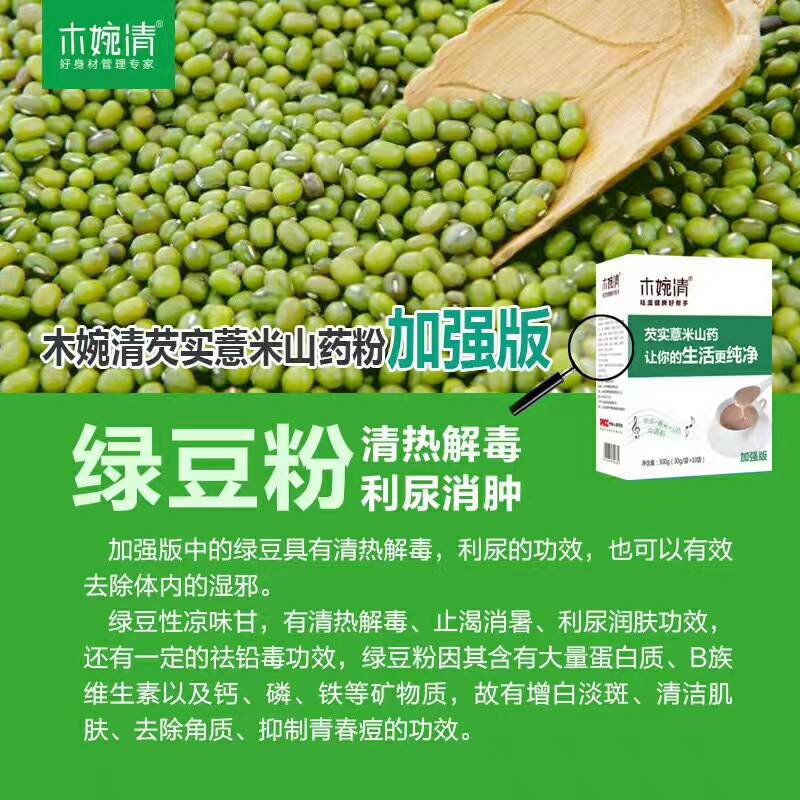
【木婉清--芡实薏米山药粉加强版】
山药、薏米、芡实是同气相求的兄弟，都有健脾益胃之神效，但用时也各有侧重。
山药可补五脏，脾、肺、肾兼顾，益气养阴。又兼具涩敛之功。
薏米，健脾而清肺，利水而益胃，补中有清，以去湿浊见长。
芡实，健脾补肾，止泻止遗，最具收敛固脱之能。
芡实薏米山药粉与木婉清木耳红豆粉搭配，对于健脾胃、去湿、瘦腿都有奇效。
加强版中添加玉米须和绿豆成分，去湿浊、解毒效果更强悍。
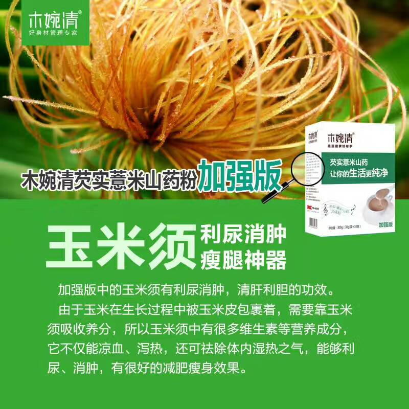
【木婉清 8个确定‼️】
✅确定安全 、没有任何副作用（picc承保食品安全责任险）
✅确定不含添加剂 ，防腐剂，填充剂，药物
✅确定孕妇 哺乳期可用，小孩老人无人群限制
✅确定能够调理肌肤到最健康状态，紧致不松弛
✅确定不存在依赖性
✅确定不饿肚子不节食真正营养全面（满足人体所需七大元素）
✅确定有减肥效果不反弹（改善代谢的同时专利技术清脂抑脂）
✅确定原料最优质（各主材辅材全部选自最好产地，由欧盟标准的自家工厂生产，饱腹感好，营养全，不用低级的魔芋粉糊弄人）
谁吃谁瘦，你还担心啥呢⁉️
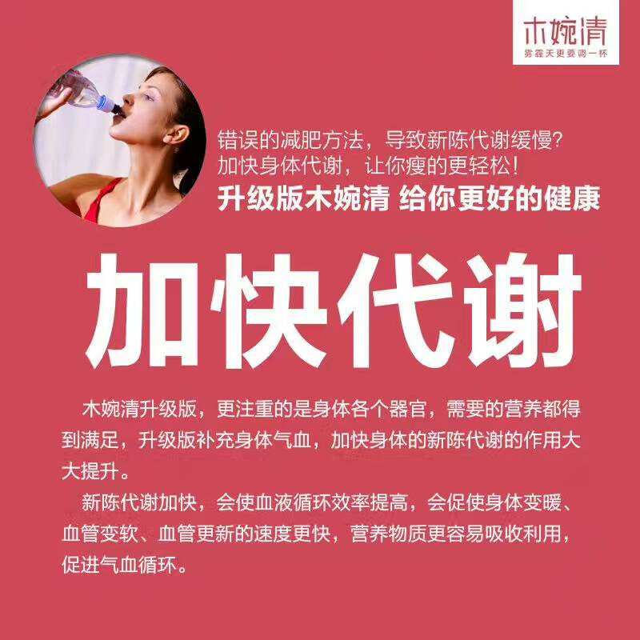
【每天一杯木婉清 湿气去无踪】
为什么现代人容易湿气重。
1⃣吃了过多的油腻食物，消化不了，堆积成湿，痰湿会堆积于身，导致身体不畅。比如常说的吃肉生痰。
2⃣消化、代谢能力不足，吃一点就易腻，体内毒素排泄不正常，凝结成湿气。
3⃣环境、季节因素的影响，比如冬有暖气，夏有空调，雾霾、回潮天很容易湿气缠身，导致身体乏力。
【木婉清调气血、补脑、排毒、调脾胃、暖宫调理月经、调理便秘】
扫一扫二维码 订购
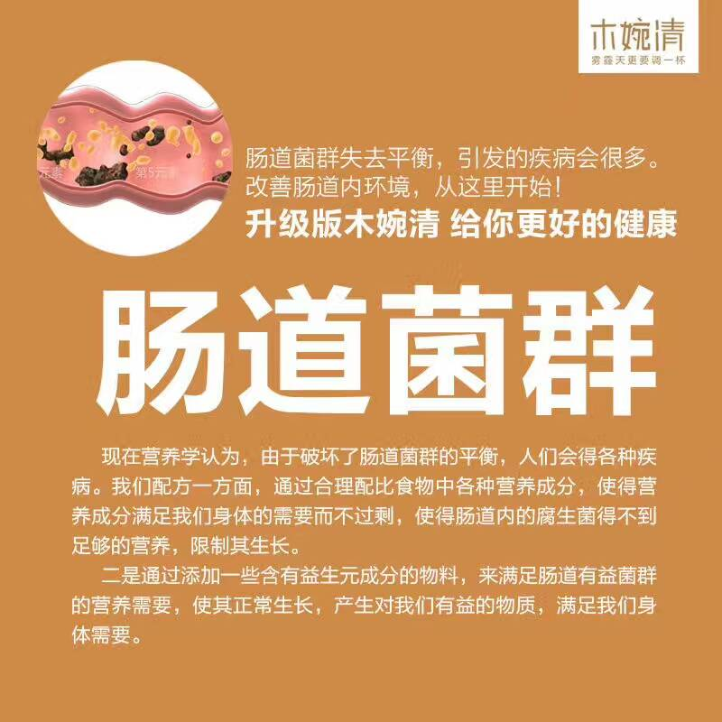
【木婉清 功效介绍：】
最近很多朋友问，木婉清只能减肥吗？
当然不是哦！
如果调气血，可以拿【3】盒奇亚籽沙棘参粉喝一个月。
如果补脑益智，可以拿【3】盒木耳核桃粉喝一个月。
如果想皮肤好想排毒，可以拿【3】盒木耳杏仁粉喝一个月。
如果脾胃虚弱，可以拿【3】盒芡实薏米山药粉喝一个月。
如果想暖宫调理月经，去水肿下奶，可以拿【3】盒木耳红豆粉喝一个月。
如果减肥，5种共20盒喝40天瘦8到20斤！！
【案例1 --木婉清—女性调理身体好帮手！】
痛经、便秘,女性最常见且苦恼的问题
餐前来杯木婉清，帮你轻松搞定
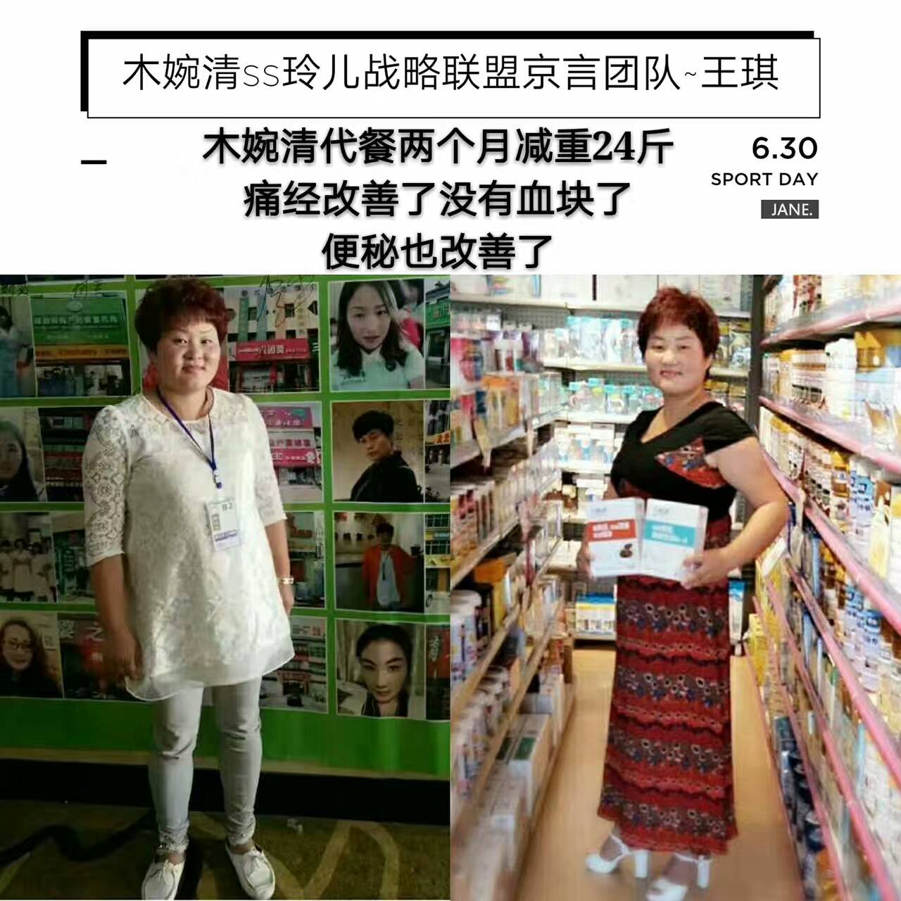
【案例2 --木婉清—瘦身家庭篇之哺乳期】
小冉表姐代餐50天瘦20.4斤
小冉嫂子代餐50天瘦23斤
结伴瘦身，都不影响宝宝口粮哦！
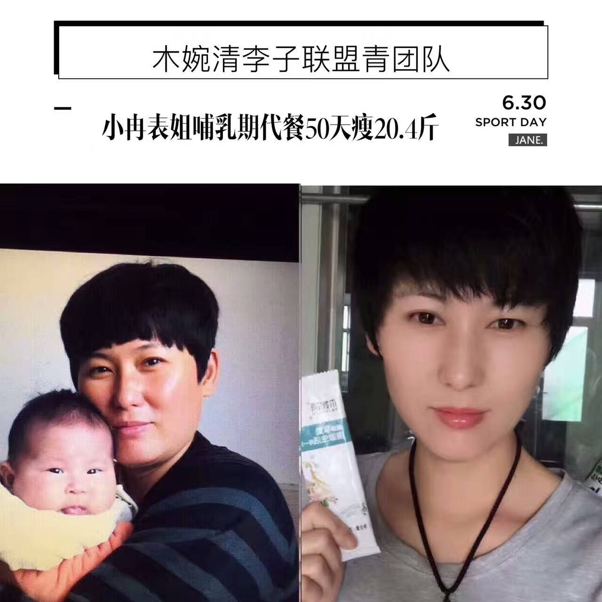
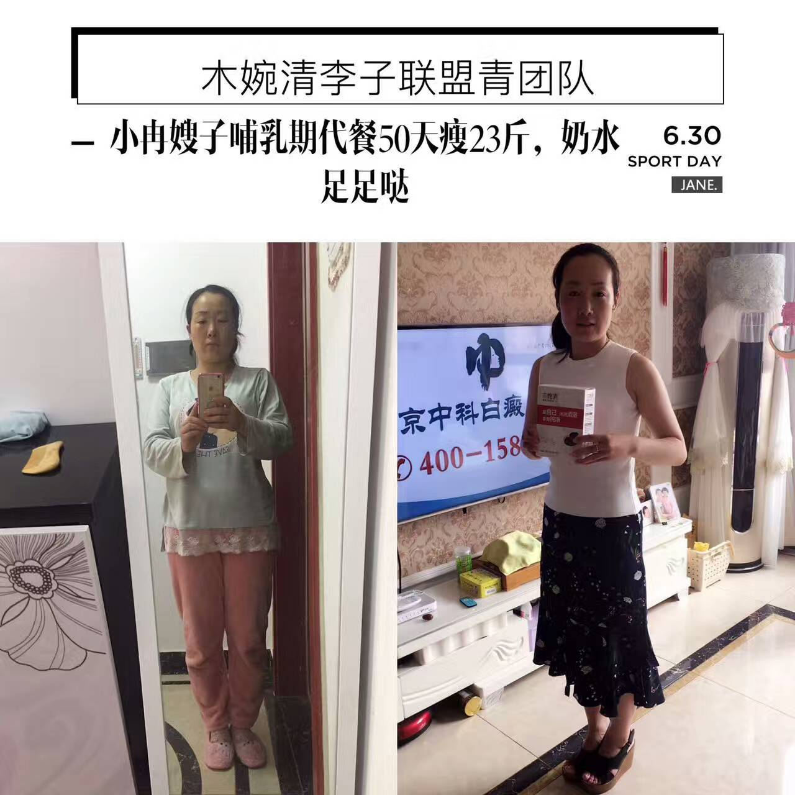
【案例3 --木婉清—瘦身家庭篇之小冉姐姐】
代餐35天瘦12斤
餐前来一杯，瘦腿瘦肚子
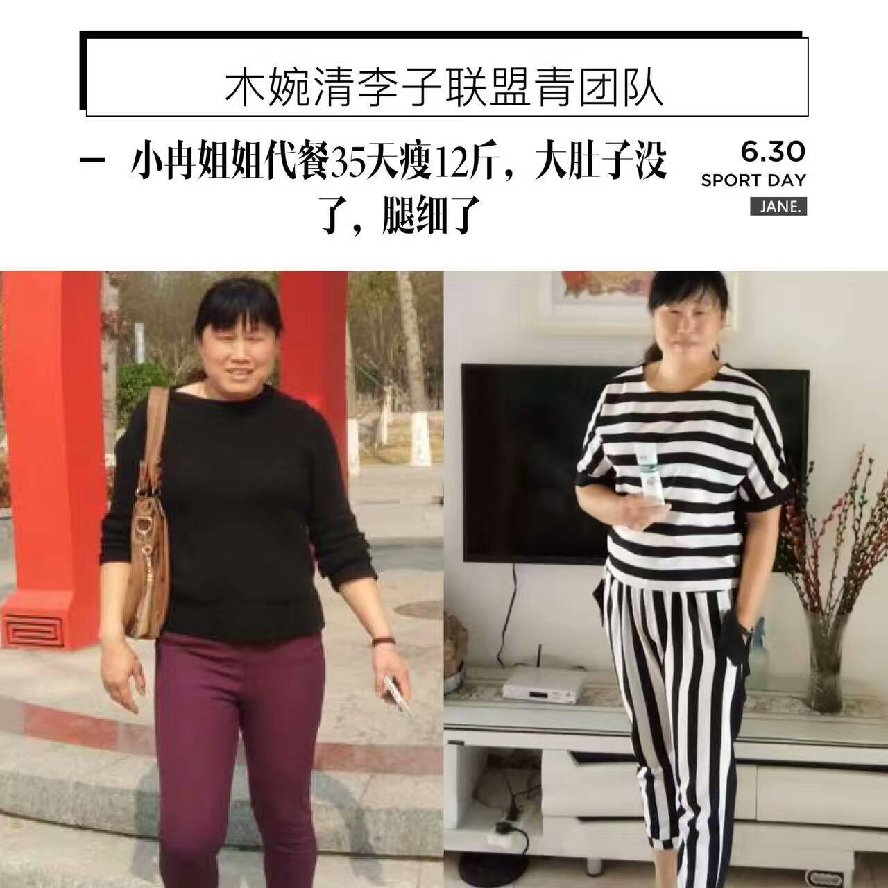
【木婉清调气血、补脑、排毒、调脾胃、暖宫调理月经、调理便秘】
扫一扫二维码 订购
零添加，无防腐 加微信 muwanqingvip 订购